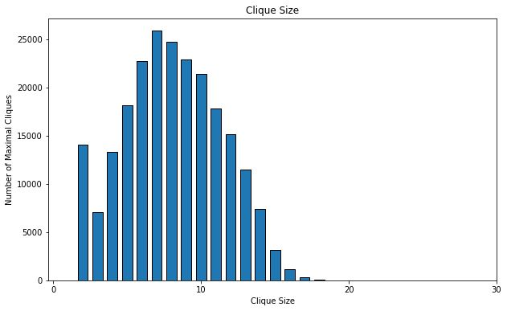
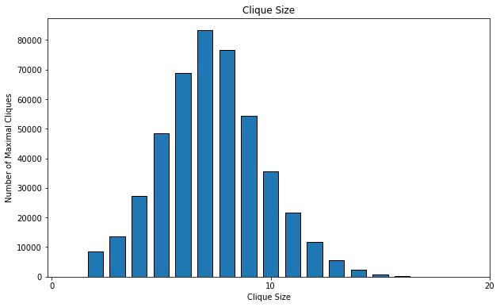
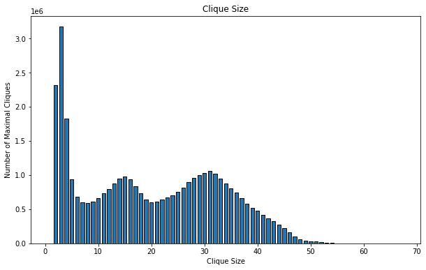

This paper presents an optimized algorithm for listing all maximal cliques in sparse graphs, leveraging the concept of *degeneracy, a measure of graph sparsity. The algorithm modifies the classic **Bron–Kerbosch algorithm, using a **degeneracy ordering* and *pivoting strategy* to achieve a near-optimal runtime of \(O(dn^{3d/3})\), where \(d\) is the degeneracy of the graph and \(n\) is the number of vertices. The algorithm is fixed-parameter tractable, meaning it runs efficiently when the degeneracy is small. Additionally, the paper establishes matching upper and lower bounds for the worst-case number of maximal cliques, proving that the algorithm is optimal up to constant factors.
The algorithm uses a *degeneracy ordering* to process vertices efficiently, reducing redundant computations. It builds on a modified *Bron–Kerbosch* backtracking method, using degeneracy-based ordering in the outer recursion and pivoting in the inner recursion to minimize calls. At each recursion step, the algorithm splits candidates into potential members (P) and excluded members (X), expanding cliques only from P. This structured approach ensures all maximal cliques are found with optimal time complexity \(O(dn^{3d/3})\), making it highly effective for large, sparse graphs.
Number of Maximal Cliques Found: 226859
Number of Vertices: 36692
Number of Edges: 367662
Execution Time: 2.10081 seconds
Number of Maximal Cliques Found: 37322355
Number of Vertices: 1696415
Number of Edges: 11095298
Execution Time: 701.12 seconds
Number of Maximal Cliques Found: 459002
Number of Vertices: 7115
Number of Edges: 103689
Execution Time: 2.80654 seconds
